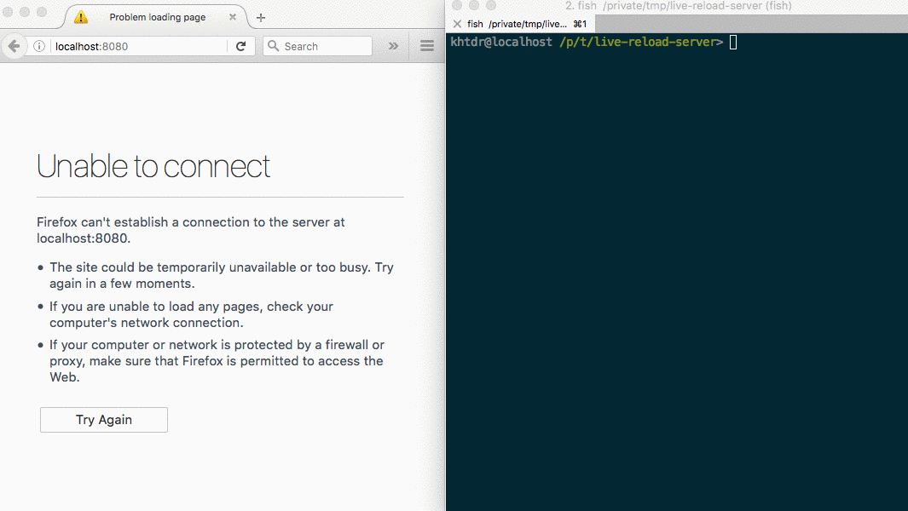

Building your own live-reloading web server
Follow along and build your own automatically-refreshing web server, as shown here: 
This setup assumes you know and use Node and NPM
You are editing HTML, CSS, and Javascript by hand, because you like it. You've had some of that hot-reloading goodness before, and you want it now, too.
You don't feel like spending the weekend reading Webpack docs, so you decide that it should only take a few dozen lines of Javascript, at most, to roll your own.
You already have node and npm installed. So you go for it.
Planning a solution
You will want to be able to:
- serve static files
- refresh the page whenever a file changes
For serving static files, there are many options to choose. The best choice will be the one that allows you to solve the "refresh" problem easiest.
But how can you refresh the page when a file changes? Your browser will not have direct access to the files you are editing, so it will rely on a smart web-server that has access to your file system.
You will need to:
- detect when a file changes
- send a signal from the server to the web browser
- trigger a refresh on the page
Simple enough :)
Putting the solution together
Building the web server
Express.js has a built-in solution for serving static files. And Node.js already has the http server. Start by creating a project directory and installing the first dependency.
mkdir ./live-reload-server
cd ./live-reload-server
npm init -y
npm install expressThis HTTP server will listen on port 8080 and serves files found in the same directory.
var express = require('express');
var app = express();
app.use(express.static(__dirname));
var http = require('http').Server(app);
http.listen(8080);
Save the code above to a file named ./server.js and run it:
node server.jsYou can verify it is working by opening a browser and going to https://localhost:8080/server.js. You will see your code that is running. Now, create a minimal webpage with a reference to a stylesheet.
Create the HTML and save it to ./index.html
<!DOCTYPE html>
<html>
<head>
<link rel='stylesheet' href='/theme.css' />
</head>
<body>
Greetings!
</body>
</html>and the CSS…
echo "body { background-color:yellow }" > ./theme.cssMake sure the server is running, and go to https://localhost:8080. You will see a yellow page with your greeting. So far, so good!
Implementing the "live-reload" feature
Node.js provides a file-watcher you can use to monitor the directory for changes. But the docs also have something to say about using this feature.
The fs.watch API is not 100% consistent across platforms, and is unavailable in some situations.
The recursive option is only supported on OS X and Windows.
Luckily(?) for you, this is good enough to get started. You will still need to signal to the browser when a change is detected, and for that you can use Socket.io.
npm install socket.io socket.io-clientThe code is straight forward: watch the working directory for changes and emit an event with Socket.io.
var fs = require('fs');
var io = require('socket.io')(http);
fs.watch(__dirname, { recursive:true }, function () {
io.emit('file-change-event');
});The Socket.io server can be started various ways. Here it is given the HTTP server from the previous step.
Finally, a puzzle to solve. Something needs to listen for the file-change-event emitted by the server. Upon receiving the event, the page also needs refreshed. So it makes sense to put the "listening code" on the webpage itself.
For obviously obvious reasons, you don't want to add the javascript to every page you fiddle with. Better to have the server inject it automatically for you!
So what is this "listening code" that needs to be on every HTML page?
<script src="/node_modules/socket.io-client/dist/socket.io.js"></script>
<script>
var socket = io();
socket.on("file-change-event", function () {
window.location.reload();
});
</script>
The snippet above includes the client library that we installed with NPM earlier. It creates a new Socket.io client, and upon receiving the file-change-event from the server, reloads the page.
Now you need to serve that snippet of javascript along with every HTML page. Back to Express.
Write a GET handler that intercepts requests for HTML pages and appends the "listening code" to the page.
app.get('/index.html', function (_, res) {
fs.readFile(__dirname + '/index.html', function (_, data) {
res.send(data
+ '<script src="/node_modules/socket.io-client/dist/socket.io.js"></script>'
+ '<script>'
+ ' var socket = io();'
+ ' socket.on("file-change-event", function () {'
+ ' window.location.reload();'
+ ' });'
+ '</script>'
);
});
});
That solves the problem for the index.html page, but what about the rest of the HTML pages? Instead of hard-coding the path, you can use a regular expression to intercept requests for HTML pages and directories.
When a request ends in a slash, take care to append index.html to the requested path.
Change:
app.get('/index.html', function (_, res) {
fs.readFile(__dirname + '/index.html', function (_, data) {
//...
});
});to:
app.get([/\/$/, /.*\.html$/], function (req, res) {
var filename = __dirname + req.path;
filename += filename.endsWith('/')? 'index.html': '';
fs.readFile(filename, function (_, data) {
//...
});
});Final result, copy+paste and start hacking
Now, putting it all together!
var express = require('express');
var app = express();
app.get([/\/$/, /.*\.html$/], function (req, res) {
var filename = __dirname + req.path;
filename += filename.endsWith('/')? 'index.html': '';
fs.readFile(filename, function (_, data) {
res.send(data
+ '<script src="/node_modules/socket.io-client/dist/socket.io.js"></script>'
+ '<script>'
+ ' var socket = io();'
+ ' socket.on("file-change-event", function () {'
+ ' window.location.reload();'
+ ' });'
+ '</script>'
);
});
});
app.use(express.static(__dirname));
var http = require('http').Server(app);
http.listen(8080);
var fs = require('fs');
var io = require('socket.io')(http);
fs.watch(__dirname, { recursive:true }, function () {
io.emit('file-change-event');
});That's it!
Start the server with node server.js, go to https://localhost:8080 in your browser, and take a good look at your yellow page. Open up the css file you created earlier, and change yellow to orange. Save, but don't refresh your page. Just observe. The page will automatically update.
The files in this tutorial can be found at: